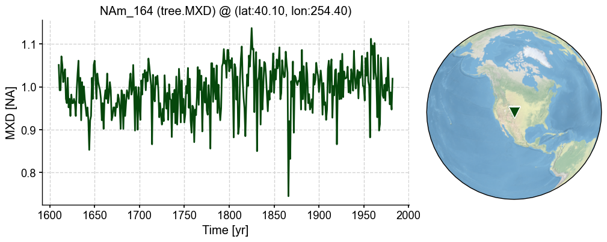
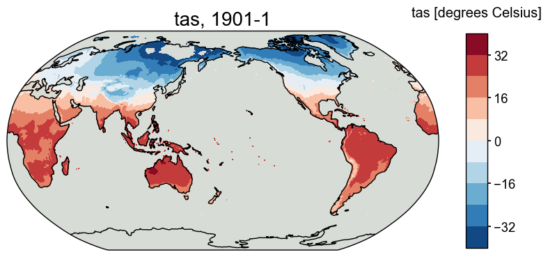

Univariate linear regression
Contents
Univariate linear regression¶
In this section, we introduce the default PSM in cfr based on univariate linear regression. It can be applied to any proxy type that is believed to have a univariate linear relationship with a certain climate variable. It also supports a seasonality searching procedure to help determine the seasonality of a specific site.
For instance, this PSM can be applied to the tree.MXD records, which we believe have high linear correlation with the local temperature condition over a growing season.
[2]:
%load_ext autoreload
%autoreload 2
import cfr
import pandas as pd
import numpy as np
import os
Data preparation¶
Proxy¶
[6]:
df = pd.read_pickle('./data/pages2k_updated_Palmyra_dataset.pkl')
pdb = cfr.ProxyDatabase().from_df(df)
[7]:
pobj = pdb.records['NAm_164']
fig, ax = pobj.plot()

Model¶
[8]:
dirpath = './data/'
model_tas = cfr.ClimateField().load_nc(os.path.join(dirpath, 'tas_sfc_Amon_iCESM_past1000historical_085001-200512.nc'))
model_pr = cfr.ClimateField().load_nc(os.path.join(dirpath, 'pr_sfc_Amon_iCESM_past1000historical_085001-200512.nc'))
[9]:
model_tas.da
[9]:
<xarray.DataArray 'tas' (time: 13872, lat: 96, lon: 144)>
[191766528 values with dtype=float32]
Coordinates:
* time (time) object 0850-01-17 00:00:00 ... 2005-12-17 00:00:00
* lat (lat) float32 -90.0 -88.11 -86.21 -84.32 ... 84.32 86.21 88.11 90.0
* lon (lon) float32 0.0 2.5 5.0 7.5 10.0 ... 350.0 352.5 355.0 357.5
Attributes:
long_name: Reference height temperature
units: K[10]:
print(np.median(np.diff(model_tas.da.lat)))
print(np.median(np.diff(model_tas.da.lon)))
1.8947372
2.5
Instrumental observations¶
[11]:
dirpath = './data/CRUTS'
obs_tas = cfr.ClimateField().load_nc(os.path.join(dirpath, 'cru_ts4.05.1901.2020.tmp.dat.nc'), vn='tmp')
obs_pr = cfr.ClimateField().load_nc(os.path.join(dirpath, 'cru_ts4.05.1901.2020.pre.dat.nc'), vn='pre')
[12]:
obs_tas = obs_tas.rename('tas')
obs_pr = obs_pr.rename('pr')
[13]:
fig, ax = obs_tas.plot(levels=np.linspace(-40, 40, 11))

[14]:
%%time
obs_tas_new = obs_tas.wrap_lon()
CPU times: user 2.26 s, sys: 1.56 s, total: 3.82 s
Wall time: 4.31 s
[15]:
obs_tas_new.da.coords
[15]:
Coordinates:
* lon (lon) float32 0.25 0.75 1.25 1.75 2.25 ... 358.2 358.8 359.2 359.8
* lat (lat) float32 -89.75 -89.25 -88.75 -88.25 ... 88.75 89.25 89.75
* time (time) datetime64[ns] 1901-01-16 1901-02-15 ... 2020-12-16
[16]:
fig, ax = obs_tas_new.plot(levels=np.linspace(-40, 40, 11))

[17]:
obs_pr.da.coords
[17]:
Coordinates:
* lon (lon) float32 -179.8 -179.2 -178.8 -178.2 ... 178.8 179.2 179.8
* lat (lat) float32 -89.75 -89.25 -88.75 -88.25 ... 88.75 89.25 89.75
* time (time) datetime64[ns] 1901-01-16 1901-02-15 ... 2020-12-16
[18]:
obs_pr_new = obs_pr.wrap_lon()
[19]:
obs_pr_new.da.coords
[19]:
Coordinates:
* lon (lon) float32 0.25 0.75 1.25 1.75 2.25 ... 358.2 358.8 359.2 359.8
* lat (lat) float32 -89.75 -89.25 -88.75 -88.25 ... 88.75 89.25 89.75
* time (time) datetime64[ns] 1901-01-16 1901-02-15 ... 2020-12-16
Get climate data for a specific ProxyRecord¶
[20]:
%%time
pobj.del_clim()
pobj.get_clim(model_tas, tag='model')
pobj.get_clim(model_pr, tag='model')
pobj.get_clim(obs_tas_new, tag='obs')
pobj.get_clim(obs_pr_new, tag='obs')
CPU times: user 87.2 ms, sys: 496 ms, total: 583 ms
Wall time: 14.8 s
[22]:
pobj.clim['obs.tas'].da
[22]:
<xarray.DataArray 'tas' (time: 1440)>
array([ -9. , -11.6 , -7.2000003, ..., 1.5 ,
-1.6 , -7.3 ], dtype=float32)
Coordinates:
lon float32 254.2
lat float32 40.25
* time (time) datetime64[ns] 1901-01-16 1901-02-15 ... 2020-12-16
Attributes:
long_name: near-surface temperature
units: degrees Celsius
correlation_decay_distance: 1200.0Create a PSM object¶
[23]:
lr_mdl = cfr.psm.Linear(pobj)
[24]:
%%time
sn_list = [
[1,2,3,4,5,6,7,8,9,10,11,12],
[6,7,8],
[3,4,5,6,7,8],
[6,7,8,9,10,11],
[-12,1,2],
[-9,-10,-11,-12,1,2],
[-12,1,2,3,4,5]
]
lr_mdl.calibrate(season_list=sn_list)
CPU times: user 201 ms, sys: 41.2 ms, total: 242 ms
Wall time: 262 ms
[25]:
lr_mdl.calib_details
[25]:
{'df': proxy tas
time
1901.0 1.013 11.300000
1902.0 1.038 10.266666
1903.0 1.014 10.099999
1904.0 0.935 9.300000
1905.0 1.009 10.533334
... ... ...
1978.0 1.001 11.033334
1979.0 0.959 10.733334
1980.0 0.987 12.066667
1981.0 0.947 11.633334
1982.0 1.019 10.800000
[82 rows x 2 columns],
'nobs': 82.0,
'fitR2adj': 0.20380288961042403,
'PSMresid': time
1901.0 -0.004538
1902.0 0.050267
1903.0 0.031074
1904.0 -0.024851
1905.0 0.013575
...
1978.0 -0.008847
1979.0 -0.042193
1980.0 -0.052652
1981.0 -0.080153
1982.0 0.015884
Length: 82, dtype: float64,
'PSMmse': 0.001922828681359366,
'SNR': 0.5212197481981893,
'seasonality': [6, 7, 8]}
[26]:
%%time
pp = lr_mdl.forward()
CPU times: user 214 ms, sys: 40.5 ms, total: 255 ms
Wall time: 256 ms
[27]:
fig, ax = pp.plot()

[ ]: